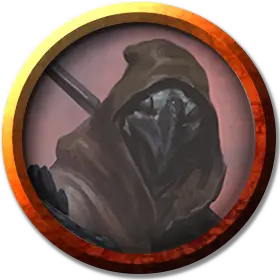

Чукка
Chukka
Средний Гуманоид (Кенку), хаотично-нейтральный, именной НИП

Класс Доспеха 13
Хиты 13 (3к8)
Скорость 30 футов
| мод | спас | ||
|---|---|---|---|
| СИЛ | 10 | +0 | +0 |
| ЛОВ | 16 | +3 | +3 |
| ТЕЛ | 10 | +0 | +0 |
| мод | спас | ||
|---|---|---|---|
| ИНТ | 11 | +0 | +0 |
| МДР | 10 | +0 | +0 |
| ХАР | 10 | +0 | +0 |
Навыки Восприятие +2, Обман +4, Скрытность +5
Чувства пассивное Восприятие 12
Языки Общий, Ауран
Опасность 1/4 (50 опыта)
Бонус мастерства +2
Особенности
Языки. Понимает Ауран и Общий, но говорит только с помощью особенности Подражание.
Мастер устраивать засады. В первом раунде сражения кенку совершает с преимуществом броски атаки по всем существам, которых он застал врасплох.
Подражание. Кенку может подражать любым звукам, которые он уже слышал, включая голоса. Существо, слышащее эти звуки, может понять, что это подражание, если совершит успешную проверку Мудрости (Проницательность) Сл 14.
Действия
Посеребрённая пика. Рукопашная атака оружием: +2 к попаданию, досягаемость 10 футов, одна цель. Попадание: 5 (1к10) колющего урона.
Описание
Чукка — оживлённый, раздражительный и занимается починкой машин в форте.
Цели Чукки и Клонка. Кенку обожают строить, чинить и водить дьявольские машины. В какой-то момент по ходу визита персонажи заметят, как кенку яростно колотят молотком сломанный «Демонодав» (параметры машины см. на стр. 219). Машина не работает, и они не могут понять почему. Они будут благодарны любому, кто поможет разобраться с проблемой.
Как помочь кенку. Одна деталь «Дьявольского измельчителя», шипастая шестерня, нарушает течение дьявольской энергии в машине. Эта шестерня, собранная из шипов демона хезроу, испускает демоническую энергию, которая и вызывает неисправность. По изучав машину не менее 10 минут и успешно пройдя проверку Интеллекта (Магия или Расследование) Сл 15, персонаж выяснит, какая деталь барахлит.
Чукка и Клонк будут благодарны, что персонажи нашли причину проблем. Персонажи могут дополнительно помочь им, удалив из шестерни демоническую сущность. В этом могут помочь заклинания, такие как рассеивание магии [dispel magic] и защита от зла и добра [protection from evil and good], и другие способы, которые персонажи смогут придумать. Если персонажи помогут кенку привести машину в порядок, они поделятся своей радостью с Безумной Мэгги, и та с большей вероятностью поможет персонажам в их поисках.